12.28.2011 15:01
Research Tools video makes 1000 views
Wow... I can't believe my research
tools video #1, RT-1 emacs keyboard introduction,
just made it to 1000 views. That's not quite the 3 million for the
introduction of Google
Oceans or the 167 thousand views of Jenifer doing the voice
over for New Seafloor in
Google Earth Tour, but I still am really impressed.
So, if you've watch the video... Thank You! It means a lot to know that the work I put into it is being used by many.
So, if you've watch the video... Thank You! It means a lot to know that the work I put into it is being used by many.
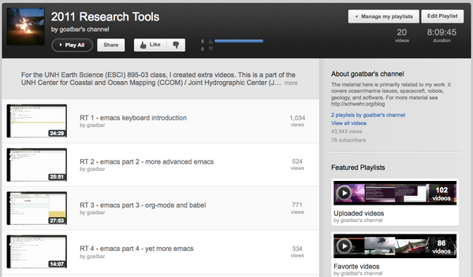
12.27.2011 11:51
Beidou navigation system
China Begins Using New Global Positioning Satellites
[slashdot]
Seriously? From the wikipedia entry on the Chinese version of GPS:
The general global navigation satellite system (GNSS) (wikipedia)
Seriously? From the wikipedia entry on the Chinese version of GPS:
- A signal is transmitted skyward by a remote terminal.
- Each of the geostationary satellites receive the signal.
- Each satellite sends the accurate time of when each received the signal to a ground station.
- The ground station calculates the longitude and latitude of the remote terminal, and determines the altitude from a relief map.
- The ground station sends the remote terminal's 3D position to the satellites.
- The satellites broadcast the calculated position to the remote terminal.
The general global navigation satellite system (GNSS) (wikipedia)
12.26.2011 14:25
RT Video 20 - Secure Shell (ssh), crontab and Emacs tramp
Grades went in yesterday for the
Research Tools course. I have many more videos that I would like to
make. Once I get to Google, I will be likely making a separate
playlist from Research
Tools 2011 YouTube Playlist.
I would kill for feedback (positive, negative, or otherwise) on any of the class. Especially helpful would be pull requests for things in mercurial!
video/video-20-secure-shell-ssh-sftp-scp.org
I would kill for feedback (positive, negative, or otherwise) on any of the class. Especially helpful would be pull requests for things in mercurial!
video/video-20-secure-shell-ssh-sftp-scp.org
12.19.2011 22:50
Dawn Wright GIS classes at OSU
I decided to try to at least one
class every day of Dawn
Wright's class:
Geographic Information Systems and Science - GEO 580, OSU
Geosciences (2010) (on iTunesU). Dawn is now at ESRI as
ESRI Chief Scientist. I haven't ever had the chance to meet
her. As a total non-related point, I finally got to meet Jim Bellingham at AGU this
year. I was supposed to meet him back 12 years ago or so, but AUV
operations and other things caused us to not cross paths till now.
As is typical of AGU, I can't remember where it was or why I met
him.
So far I'm 1.5 classes in and not sure what to think of it. I cowrote a GRASS GIS tutorial at NASA Ames in 1993 and was an Arc/Info user in the 1994-5 time range at the USGS. It might be good for me to think through the material that she presents in her class, especially since she has a very different style than I do.
She also has these two courses on iTunesU: Geographic Information Systems and Science - GEO 465_565 2009 and Geovisualization Lecture Series - Winter Geography/Geology Seminar 2009.
I gave it a go trying to get my Research Tools course on iTunesU for UNH, but all I got was a response from the web team saying that it would take them an entire day and they didn't know who at UNH would pay for it (???). I guess I should just try to set up an iTunes podcast channel when I get some time to put my lectures into someplace they can be searched.
So far I'm 1.5 classes in and not sure what to think of it. I cowrote a GRASS GIS tutorial at NASA Ames in 1993 and was an Arc/Info user in the 1994-5 time range at the USGS. It might be good for me to think through the material that she presents in her class, especially since she has a very different style than I do.
She also has these two courses on iTunesU: Geographic Information Systems and Science - GEO 465_565 2009 and Geovisualization Lecture Series - Winter Geography/Geology Seminar 2009.
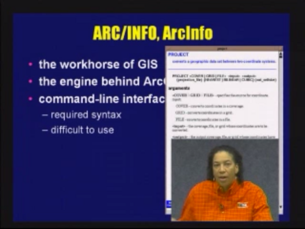
I gave it a go trying to get my Research Tools course on iTunesU for UNH, but all I got was a response from the web team saying that it would take them an entire day and they didn't know who at UNH would pay for it (???). I guess I should just try to set up an iTunes podcast channel when I get some time to put my lectures into someplace they can be searched.
12.17.2011 07:22
Tami's CCOM seminar
Yesterday, Tami presented her masters
research project as a part of the CCOM seminar. Over the last
couple months, Tami has gotten really good at using python to
process full wave form single beam sonar. I watched her
presentation over the IVS 3D
GoToMeeting channel and grabbed a couple of screenshots that am
posting to show off what Tami did. (Tami, I hope you don't mind!)
She did a great job of creating an algorithm in python to
pick the top of the eel grass and the "hard" bottom in her 2011
survey lines.
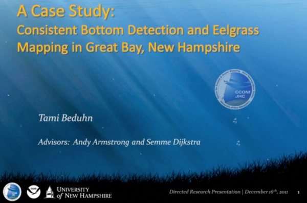
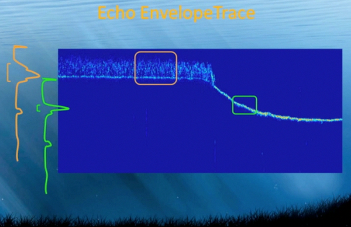
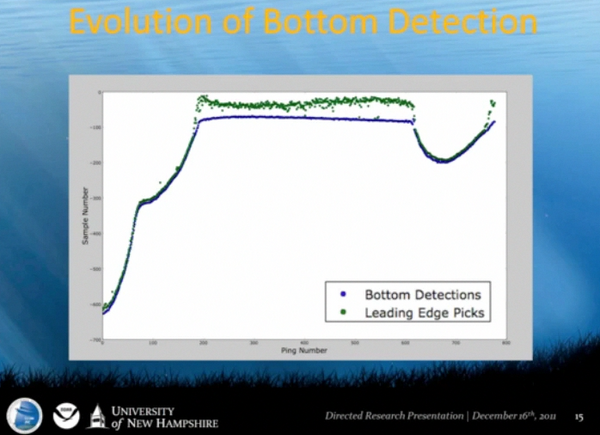
12.16.2011 16:21
YouTube machine transcriptions
Okay, this is super awesome! I just
noticed in my YouTube videos that there is now a machine
transcription that you can download. I should be able to edit this
to make it correct and it is way easier to fix something like this
than to create one from scratch. Additionally, this means that I
will end up with the text for my videos. Now I just need to finish
the class so I get some time to work on the transcriptions. Some of
this is highly entertaining!
0:00:01.140,0:00:04.670 pull my name is kurt shillinger and i'll be showing you the game now 0:00:04.670,0:00:06.880 expect senator 0:00:06.880,0:00:10.359 now he max is more than just tech center itself 0:00:10.359,0:00:15.519 pull environment for all sorts of text manipulation passes including 0:00:15.519,0:00:18.250 programming handed nanjing 0:00:18.250,0:00:21.180 have projects in other tasks
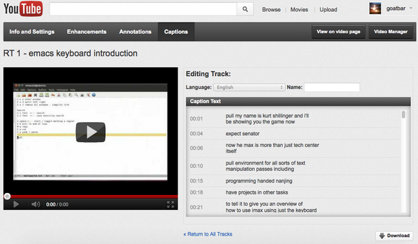
12.16.2011 10:37
Rick Brennan's talk at CCOM
From the UNH CCOM/JHC Seminar Series
2011-12. NOAA Corps Officer CDR Richard T. Brennan Presents:
"Coastal and Ocean Mapping: A Nautical Cartographer's Perspective".
Talk was given on Friday, December 9th, 2011 at UNH's Chase Ocean
Engineering Laboratory. Awesome that they are turning around videos
so quickly!
https://www.facebook.com/CCOMJHC
Necessary Map Elements: - Distance or Scale - Direction (where's north?) - Legend (what do the colors mean?) - Source (who produced the map?) - Position (graticule/border) http://www.colorado.edu/geography/gcraft/notes/cartocom/elements.htmlNathaniel Bowditch
https://www.facebook.com/CCOMJHC
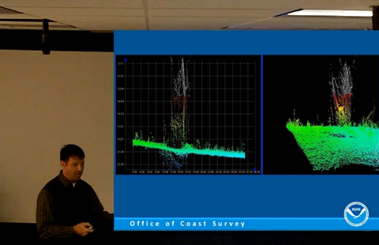
12.16.2011 06:39
Using Yolk to build fink packages
I've had the idea of using pypi as
the raw source to create a starter fink package info file or to
help with the update process. I finally took a couple minutes to
give it a go based on the Yolk python package. I got a
proof of concept done, but I'm not sure that I am on the right
track. I posted a ticket with the Yolk developer, Rob Cakebread asking for examples
of how he thinks the yolk API should be used:
https://github.com/cakebread/yolk/issues/2
In looking around, I realized that perhaps yolk isn't the best platform for this. Rob points to g-pypi:
I got a bunch turned around in my initial inspection of yolk, but after a bit here is what I came up with for two examples. First with SQLAlchemy:
https://github.com/cakebread/yolk/issues/2
In looking around, I realized that perhaps yolk isn't the best platform for this. Rob points to g-pypi:
g-pypi creates ebuilds for Gentoo Linux using information in PyPI (Python Package Index).That is exactly what I am trying to do for fink and it was a 2010 Google Summer of Code project. Looking into g-pypi, I realized that the code is also based on yolk and by Rob, so yolk looks to be the way to go. The one thing that I was bummed to see is that he is using the Cheetah templating library rather than python's str ".format" method.
I got a bunch turned around in my initial inspection of yolk, but after a bit here is what I came up with for two examples. First with SQLAlchemy:
import yolk.pypi as pypi
cs = pypi.CheeseShop()
cs.package_releases('SQLAlchemy')
# ['0.7.4']
cs.query_versions_pypi('SQLAlchemy')
# ('SQLAlchemy', ['0.7.4'])
sa_rd = cs.release_data('SQLAlchemy','0.7.4')
sa_ru = cs.release_urls('SQLAlchemy','0.7.4')
sa_ru[0]['md5_digest']
# '731dbd55ec9011437a842d781417eae7'
sa_ru[0]['url']
The results of the release_urls call consists of just one entry:
[{'comment_text': '',
'downloads': 4525,
'filename': 'SQLAlchemy-0.7.4.tar.gz',
'has_sig': False,
'md5_digest': '731dbd55ec9011437a842d781417eae7',
'packagetype': 'sdist',
'python_version': 'source',
'size': 2514647,
'upload_time': <DateTime '20111209T23:31:43' at 10fb28128>,
'url': 'http://pypi.python.org/packages/source/S/SQLAlchemy/SQLAlchemy-0.7.4.tar.gz'}]
SQLObject gives more complicated responses:
import yolk.pypi as pypi
cs = pypi.CheeseShop()
cs.package_releases('SQLObject')
# ['1.2.1', '1.1.4']
cs.query_versions_pypi('SQLObject')
# ('SQLObject', ['1.2.1', '1.1.4'])
cs.get_download_urls('SQLObject')
# ['http://pypi.python.org/packages/2.4/S/SQLObject/SQLObject-1.2.1-py2.4.egg',
# 'http://pypi.python.org/packages/2.5/S/SQLObject/SQLObject-1.2.1-py2.5.egg',
# 'http://pypi.python.org/packages/2.6/S/SQLObject/SQLObject-1.2.1-py2.6.egg',
# 'http://pypi.python.org/packages/2.7/S/SQLObject/SQLObject-1.2.1-py2.7.egg',
# 'http://pypi.python.org/packages/source/S/SQLObject/SQLObject-1.2.1.tar.gz',
# 'http://pypi.python.org/packages/2.4/S/SQLObject/SQLObject-1.1.4-py2.4.egg',
# 'http://pypi.python.org/packages/2.5/S/SQLObject/SQLObject-1.1.4-py2.5.egg',
# 'http://pypi.python.org/packages/2.6/S/SQLObject/SQLObject-1.1.4-py2.6.egg',
# 'http://pypi.python.org/packages/2.7/S/SQLObject/SQLObject-1.1.4-py2.7.egg',
# 'http://pypi.python.org/packages/source/S/SQLObject/SQLObject-1.1.4.tar.gz']
cs.get_download_urls('SQLObject',pkg_type='source')
# ['http://pypi.python.org/packages/source/S/SQLObject/SQLObject-1.2.1.tar.gz',
# 'http://pypi.python.org/packages/source/S/SQLObject/SQLObject-1.1.4.tar.gz']
cs.get_download_urls('SQLObject',version='1.2.1', pkg_type='source')
# ['http://pypi.python.org/packages/source/S/SQLObject/SQLObject-1.2.1.tar.gz']
so_rd = cs.release_data('SQLObject','1.2.1')
so_rd['download_url']
# 'http://pypi.python.org/pypi/SQLObject/1.2.1'
so_ru = cs.release_urls('SQLObject','1.2.1')
And the release_urls for just one version contains both source and
egg file archives.
[{'comment_text': '',
'downloads': 76,
'filename': 'SQLObject-1.2.1-py2.4.egg',
'has_sig': False,
'md5_digest': '42bd3bcfd5406305f58df98af9b7ced8',
'packagetype': 'bdist_egg',
'python_version': '2.4',
'size': 354432,
'upload_time': <DateTime '20111204T15:33:09' at 10fb85518>,
'url': 'http://pypi.python.org/packages/2.4/S/SQLObject/SQLObject-1.2.1-py2.4.egg'},
{'comment_text': '',
'downloads': 62,
'filename': 'SQLObject-1.2.1-py2.5.egg',
'has_sig': False,
'md5_digest': '0303afd1580b6345a88baad91a3a701d',
'packagetype': 'bdist_egg',
'python_version': '2.5',
'size': 350388,
'upload_time': <DateTime '20111204T15:33:11' at 10fb85050>,
'url': 'http://pypi.python.org/packages/2.5/S/SQLObject/SQLObject-1.2.1-py2.5.egg'},
{'comment_text': '',
'downloads': 129,
'filename': 'SQLObject-1.2.1-py2.6.egg',
'has_sig': False,
'md5_digest': 'df4bfd367a141c6c093766e25dea68f3',
'packagetype': 'bdist_egg',
'python_version': '2.6',
'size': 349829,
'upload_time': <DateTime '20111204T15:33:13' at 10fb85248>,
'url': 'http://pypi.python.org/packages/2.6/S/SQLObject/SQLObject-1.2.1-py2.6.egg'},
{'comment_text': '',
'downloads': 174,
'filename': 'SQLObject-1.2.1-py2.7.egg',
'has_sig': False,
'md5_digest': '0c3df5991f680a7d7ec0aab2c898a945',
'packagetype': 'bdist_egg',
'python_version': '2.7',
'size': 348455,
'upload_time': <DateTime '20111204T15:33:16' at 10fb85908>,
'url': 'http://pypi.python.org/packages/2.7/S/SQLObject/SQLObject-1.2.1-py2.7.egg'},
{'comment_text': '',
'downloads': 202,
'filename': 'SQLObject-1.2.1.tar.gz',
'has_sig': False,
'md5_digest': 'a01cfd19da6f19ecaf79c2eed88c3dc3',
'packagetype': 'sdist',
'python_version': 'source',
'size': 259127,
'upload_time': <DateTime '20111204T15:33:07' at 10fb85a70>,
'url': 'http://pypi.python.org/packages/source/S/SQLObject/SQLObject-1.2.1.tar.gz'}]
That gave me enough to knock out the proof of concept. There needs
to be huge amounts of fine tuning to make this a truly useful tool.
For example, I need to be able to detect all the binaries that are
installed and create the update_alternatives entries. The initial
code:
#!/usr/bin/env python
from yolk.pypi import CheeseShop
template = '''Info3: <<
Package: {fink_name}%type_pkg[python]
Version: {version}
Revision: {revision}
Source: {url}
Source-MD5: {md5}
Type: python ({types})
Depends: python%type_pkg[python]
BuildDepends: distribute-py%type_pkg[python]
CompileScript: true
InstallScript: %p/bin/python%type_raw[python] setup.py install --root=%d --single-version-externally-managed
License: OSI-Approved
Homepage:
Maintainer: Kurt Schwehr <goatbar@users.sourceforge.net>
Description:
DescDetail: <<
<<
# Info3
<<
'''
def pypi_to_fink(package_name):
cs = CheeseShop()
release = cs.package_releases(package_name)[0] # Hope that highest is first
#
# FIX: make a function that pulls the first sdist
# Possibly prioritize by tar.bz2 -> tar.gz -> zip
url = cs.release_urls(package_name,release)[0]
fink = {}
fink['name'] = package_name.lower()
fink['fink_name'] = fink['name']+'-py'
fink['version'] = release
fink['revision'] = 1
# FIX: remove the package name if need be from the URL
fink['url'] = url['url']
fink['md5'] = url['md5_digest']
py_types = ['2.7', '3.2'] # FIX: figure this out
fink['types'] = ' '.join(py_types)
return template.format(**fink)
if __name__ == '__main__':
import sys
print pypi_to_fink(sys.argv[1])
Here is using it for SQLAlchemy:
./pypi_to_fink.py SQLAlchemy Info3: << Package: sqlalchemy-py%type_pkg[python] Version: 0.7.4 Revision: 1 Source: http://pypi.python.org/packages/source/S/SQLAlchemy/SQLAlchemy-0.7.4.tar.gz Source-MD5: 731dbd55ec9011437a842d781417eae7 Type: python (2.7 3.2) Depends: python%type_pkg[python] BuildDepends: distribute-py%type_pkg[python] CompileScript: true InstallScript: %p/bin/python%type_raw[python] setup.py install --root=%d --single-version-externally-managed License: OSI-Approved Homepage: Maintainer: Description: DescDetail: << << # Info3 <<That is not the best info package for fink on the planet, but it's a great start. If I want to keep participating with fink, I need to get smarter about testing and automation.
12.14.2011 14:09
Research Tools on Hacker News
I just got a nice note from Jeffrey
Morin at MIT that my Research Tools class made it onto the Hacker News homepage today:
Research
Tools class (unh.edu). I have to admit, that while I follow
slashdot and briefly followed digg, I hadn't seen Hacker News
before, so I don't really know what this means.
Thanks to Steven Bedrick for the post. He has an interesting class that is also similar to mine: Scripting for Scientists
For my little corner of the web, this is a lot of hits:
My class:
http://vislab-ccom.unh.edu/~schwehr/Classes/2011/esci895-researchtools/
Thanks to Steven Bedrick for the post. He has an interesting class that is also similar to mine: Scripting for Scientists
For my little corner of the web, this is a lot of hits:
cd /var/log/apache2 grep 'rt/ HTTP|esci895-researchtools/ HTTP' other_vhosts_access.log | grep '14/Dec' | grep -v icon | wc -l 4841Not that much compared to the many 10's of millions when I work a spacecraft mission, but that's pretty awesome for a class covering emacs, python and the like.
My class:
http://vislab-ccom.unh.edu/~schwehr/Classes/2011/esci895-researchtools/
12.13.2011 20:27
Beyond (or before?) the mouse
At AGU, Bernie Coakley and I were
discussing education and he pointed me to a class at the University
of Alaska by Ronni
Grapenthin:
Beyond the Mouse 2011 - The (geo)scientist's computational chest. (A Short Course on Programming)
Ronni has published a short article about the class in AGU's EOS. (AGU membership required).
The class is similar to my Research Tools Course that I have now finished teaching and need to finish the grading for.
01_thinking_programs.pdf
Beyond the Mouse 2011 - The (geo)scientist's computational chest. (A Short Course on Programming)
Ronni has published a short article about the class in AGU's EOS. (AGU membership required).
The class is similar to my Research Tools Course that I have now finished teaching and need to finish the grading for.
01_thinking_programs.pdf
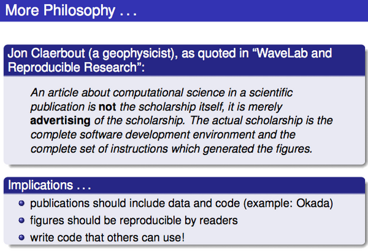
12.11.2011 14:11
Open Access to research literature
Request for Information: Public Access to Peer-Reviewed Scholarly
Publications Resulting From Federally Funded Research (Federal
Register)
Danah Boyd posted on g+ and Save Scholarly Ideas, Not the Publishing Industry (a rant)
I think that a reasonable alternative to the current closed journals would be for me to retain the copyright and allow the journal an exclusive (e.g. not even my web page) to my paper for 1 year. After that, I release my paper under an Creative Commons license.
Open Access on Wikipedia
Danah Boyd posted on g+ and Save Scholarly Ideas, Not the Publishing Industry (a rant)
Q2: What are the five things that you think that other scholars should do to help challenge the status quo wrt scholarly publishing?So what have I done?
- My papers are online on my site
- I have a paper in progress that is in a public DVCS: Toils of AIS (Sorry ESR! I need to work on it ASAP!)
- I post a good amount of my research on my blog
- I have my Google Scholar Citations and JabRef HTML pub list with BibTex entries
- I'm going to work for Google on Ocean, where I hope to show off all sorts of peoples' research
- I post my source code and class notes online with open source licenses: schwehr on github and schwehr on BitBucket
- My research tools class has videos and audio from lecture under a Creative Commons license
I think that a reasonable alternative to the current closed journals would be for me to retain the copyright and allow the journal an exclusive (e.g. not even my web page) to my paper for 1 year. After that, I release my paper under an Creative Commons license.
Open Access on Wikipedia
12.09.2011 07:49
Jane Lubchenco at AGU, Scientific Integrity
Jane Lubchenco gave a talk this week
at AGU:
Predicting and Managing Extreme Events (Full text). As a part
of that, she started with "NOAA'S SCIENTIFIC INTEGRITY POLICY" and
there was a press release,
NOAA issues scientific integrity policy, that links to NOAA Scientific
Integrity Commons. That last page links to
Scientific%20Integrity%20Policy_NAO%20202-735_Signed.pdf, which
sadly does not have OCR'ed text to go with it.
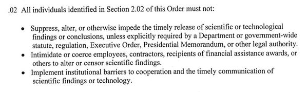
12.08.2011 14:08
GeoMapApp was missing from Research Tools
I am bummed that I didn't get a
chance to bring Andrew Goodwillie up to UNH for the traditional
class on GeoMapApp. I found Andrew at AGU today manning the
Integrated Earth Data Applications
(IEDA) booth. Same people at LDEO, but a new umbrella name. I
was hoping to ask him if I could upload the webinar that he, Laura
Wetzel, and a bunch of other folks recorded: MARGINS Data in the
Classroom: Teaching with MARGINS Data and GeoMapApp
(2009).
Instead, Andrew pointed me to a whole slew of videos that he uploaded to YouTube three weeks ago! What excellent timing! He put 22 short videos up on the GeoMapApp channel. I made a playlist of them so that you can watch all 1 hour and 47 minutes of video in one go (if you are up for absorbing that much material in one sitting, I'll be seriously impressed!)
GeoMapApp YouTube Playlist
So get watching! If you are ocean mapping or marine geology/geophysics student, this is a tool that I consider being a "must know."
And I noticed Ramon Arrowsmith at ASU is a subscriber to the GeoMapApp channel. Ramon was finishing his PhD at Stanford while I was an undergrad building user interfaces for finite element and borehole software in Dave Pollard's lab.
It looks like Ramon has got some great videos up on his YouTube channel, especially if you are learning ArcGIS. For Example:
Instead, Andrew pointed me to a whole slew of videos that he uploaded to YouTube three weeks ago! What excellent timing! He put 22 short videos up on the GeoMapApp channel. I made a playlist of them so that you can watch all 1 hour and 47 minutes of video in one go (if you are up for absorbing that much material in one sitting, I'll be seriously impressed!)
GeoMapApp YouTube Playlist
So get watching! If you are ocean mapping or marine geology/geophysics student, this is a tool that I consider being a "must know."
And I noticed Ramon Arrowsmith at ASU is a subscriber to the GeoMapApp channel. Ramon was finishing his PhD at Stanford while I was an undergrad building user interfaces for finite element and borehole software in Dave Pollard's lab.
It looks like Ramon has got some great videos up on his YouTube channel, especially if you are learning ArcGIS. For Example:
12.08.2011 07:13
BitTorrent for ships - revisited
Val asked me to explain my thoughts
on why the BitTorrent
protocol might be good for research ships. I'd love to hear
other thoughts about how to most effectively use the limited sat
bandwidth without destroying the other critical uses of that link
and allowing for bursts of data over other routes when
possible.
I thought quite a bit about this back in 1996 / 1997 when I wrote the first version of a protocol to blast image data back over a double hop geosync satellite link from the Nomad Rover in the Atacama desert of Chile back to 2-3 ground control centers at NASA Ames (California), Carnegie Mellon (Pittsburgh, PA), and I forget the other locations. I very much regret not having written a journal paper back then about what Dan Christian and I got working.
My original design was using multicast UDP with RTI's Network Data Delivery Service (NDDS; now DDS). The robot was running my code on VxWorks and there were 5-10+ Sun Solaris and SGI Irix 5.x workstations consuming the multicast stream. I had a good sized ring buffer of image blocks. As images were captured, they were dropped into the ring buffer. Another thread sent out packets at a good clip, but we made sure to never 100% saturate our dedicated satellite links to reserve space for command and control data. End nodes could then send very small retransmit request packets and the robot would resend data if it was still in the ring buffer. This meant that when the network degraded, we would get some images with unknown (aka black) blocks, but the system was always moving forward. When the data loss rate was low, we spent almost no time on the resend process.
With bigger machines and huge disks on ships, we can now expect things like BitTorrent to get 100% of the data correctly to the end points. But with satellite links, there is a lot of very specific knowledge that can help you tune packet size and transmission rate. Is each link section going over a reliable tunnel (e.g. between a ground station and the satellite)? Can we balance packet overhead with the BER (bit-error-rate) on the link to pick the optimal packet size? Is there packet fragmentation happening at any point that means we might as well send smaller packets?
Lots of interesting things going on and trade offs to weigh!
What I wrote:
I look forward to the day when data is never again shipped more than a couple hundred feet by DVD/flashdrive/USB Drive/Tape (or maybe a helicopter flight from a ship in the ice to McMurdo). Our data is not a Washington Mutual data center armored truck sized data center migration (a story I very much enjoyed hearing).
My thoughts so far...
Benefits of a BitTorrent style setup:
I'd be interested to hear what others thought about this (good/bad/otherwise :). I don't have available engineering time to work on such a system, but it would be great to flush out the idea and then we can have it out there with the chance that an enterprising Computer Science grad student in networking might take it on as a thesis project.
Update 2011-12-08: Dan Christian followed up (g+ post) with a number of suggestions including UDP tracker protocol - "a high-performance low-overhead BitTorrent tracker protocol">. And DCCP, or ECN. Dan has something cool up his sleeve for just about any topic I bring up. Wi-fi buses drive rural web use (bbc news)
I thought quite a bit about this back in 1996 / 1997 when I wrote the first version of a protocol to blast image data back over a double hop geosync satellite link from the Nomad Rover in the Atacama desert of Chile back to 2-3 ground control centers at NASA Ames (California), Carnegie Mellon (Pittsburgh, PA), and I forget the other locations. I very much regret not having written a journal paper back then about what Dan Christian and I got working.
My original design was using multicast UDP with RTI's Network Data Delivery Service (NDDS; now DDS). The robot was running my code on VxWorks and there were 5-10+ Sun Solaris and SGI Irix 5.x workstations consuming the multicast stream. I had a good sized ring buffer of image blocks. As images were captured, they were dropped into the ring buffer. Another thread sent out packets at a good clip, but we made sure to never 100% saturate our dedicated satellite links to reserve space for command and control data. End nodes could then send very small retransmit request packets and the robot would resend data if it was still in the ring buffer. This meant that when the network degraded, we would get some images with unknown (aka black) blocks, but the system was always moving forward. When the data loss rate was low, we spent almost no time on the resend process.
With bigger machines and huge disks on ships, we can now expect things like BitTorrent to get 100% of the data correctly to the end points. But with satellite links, there is a lot of very specific knowledge that can help you tune packet size and transmission rate. Is each link section going over a reliable tunnel (e.g. between a ground station and the satellite)? Can we balance packet overhead with the BER (bit-error-rate) on the link to pick the optimal packet size? Is there packet fragmentation happening at any point that means we might as well send smaller packets?
Lots of interesting things going on and trade offs to weigh!
What I wrote:
I look forward to the day when data is never again shipped more than a couple hundred feet by DVD/flashdrive/USB Drive/Tape (or maybe a helicopter flight from a ship in the ice to McMurdo). Our data is not a Washington Mutual data center armored truck sized data center migration (a story I very much enjoyed hearing).
My thoughts so far...
Benefits of a BitTorrent style setup:
- designed with networks that frequently go up and down. rsync over ssh will work, but not great.
- It's okay with transferring bits and pieces.
- If you hit a high bandwidth spot like wifi or wired in a harbor, it will happily ramp up the bandwidth.
- Think Barrow, AK... it could do a fast dump to a local dump to a shore client when a ship came in range and now you have two seeds getting data back through the system to the national archives.
- This can be hands off... the ship just sends the file definition / seed info over the sat link and then the archive sites can monitor the progress and the ship slowly and sporadically sends the files in no particular order.
- If two ships passed using SWAP, it is possible to pass data to a vessel that will hit higher bandwidth internet sooner.
- Again with SWAP, if you have one ship with a much bigger sat pipe, BitTorrent could totally handle the UUCP like job of bouncing the data to shore.
- What you don't want (that is in the current spec) is to have more than 1 or 2 clients pulling that data. Having clients "swarm" the ships network needs to be prevented.
- Most IT groups will so "no way" to anything peer-to-peer without ever looking beyond the first time they see a word proposing such.
- Used UDP to send and I'm not sure if it should be TCP or UDP to "ack" blocks
- Have a configurable or dynamic UDP packet size to best work with the specific satellite configuration and bit error rate
- Can listen to the ship's systems for hints about how much sat bandwidth to try to use
- Being able to know now many clients to send data to based on the route to that client (e.g. over sat verses land/sea based WAN)
- Evaluate if multicast could reduce the number of retransmits needed by increasing the chance that someone would get the packet and ack it
- Automate the seek info handling and distribution
- Can we use this channel to more effectively update ship board software systems? e.g. data delivery to ships
- A priority system to make sure that the most important data files or data types get to shore first (and I would imagine that will always be changing based on the vessel science goals)
I'd be interested to hear what others thought about this (good/bad/otherwise :). I don't have available engineering time to work on such a system, but it would be great to flush out the idea and then we can have it out there with the chance that an enterprising Computer Science grad student in networking might take it on as a thesis project.
Update 2011-12-08: Dan Christian followed up (g+ post) with a number of suggestions including UDP tracker protocol - "a high-performance low-overhead BitTorrent tracker protocol">. And DCCP, or ECN. Dan has something cool up his sleeve for just about any topic I bring up. Wi-fi buses drive rural web use (bbc news)
12.07.2011 23:29
IRC via satellite
On Monday, I saw an interesting
poster... running IRC over an iridium satellite link to connect the
team members on a NASA research plan with the ground control team
members. Woot! Back in 1996 was the first time I used UNIX talk
with someone in the field over an satellite link. But it wasn't
until 2011 that I did IRC with someone on a plane (akh or dmacks
was in #fink while over the middle of the Atlantic)
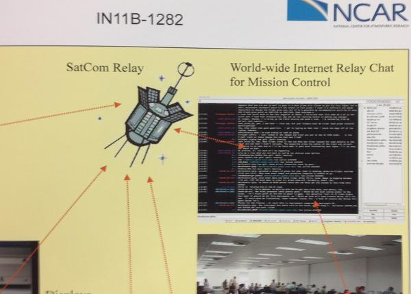
12.05.2011 10:47
ArcGIS AIS Data Handler
I just found out about this through a
very round about way. I think this is a project that I consulted
with a while back, but I'm not totally sure. It's interesting to
see that they site two of my papers. Let me know if you use this
ArcGIS plugin. I'd love to see some blog posts and papers about how
this system actually works.
http://marinecadastre.gov/AIS/
I skimmed through the AISDataHandlerTutorial_DRAFT.pdf and see that they have lots of cleaning tools. It will take some serious thought to see what I think about these processing techniques.
It is very awesome that they released the source code, but the code is not well released. There is no authors, readme, license, etc. It looks like it is written in C# (C-Sharp). It also includes a number of dll's, which are very much not source.
Found a readme burried in AISTools/Resources/:
http://marinecadastre.gov/AIS/
I skimmed through the AISDataHandlerTutorial_DRAFT.pdf and see that they have lots of cleaning tools. It will take some serious thought to see what I think about these processing techniques.
It is very awesome that they released the source code, but the code is not well released. There is no authors, readme, license, etc. It looks like it is written in C# (C-Sharp). It also includes a number of dll's, which are very much not source.
find . | grep -i parse ./AISFilter/AISParser.cs ./AISFilter/vdm_parser.cs ./aisparser.dllSo yes, this includes Brian's AIS Parser, but only as binary.
Found a readme burried in AISTools/Resources/:
AISTools Resource Files: -AISTools.mdb: contains codes for translating values to something meaningful -Clean_FeatureClass.py: Python script to clean feature class -Clean_Table.py: Python script to clean tables Take these files and place them in an AISTools directory in the same folder as the ArcMap "Bin" folder. For example, if your installation is C:\Program Files\ArcGIS\Desktop10.0\Bin\ArcMap.exe, put the files in C:\Program Files\ArcGIS\Desktop10.0\AISTools.And in one of the python files, I found evidence that this was done by ASA, who did indeed ask me a number of questions while writing this code for NOAA.
head -5 Clean_FeatureClass.py # --------------------------------------------------------------------------- # MMSI_CountryCode.py # (generated by Zongbo Shang zshang@asascience.com) # Description: # ---------------------------------------------------------------------------Um... not "MMSI_CountryCode.py" but at least this is some provenance info pointing at ASA. I also found this weirdness:
./AISMenu10/Properties/AssemblyInfo.cs:[assembly: AssemblyCopyright("Copyright © 2011")]
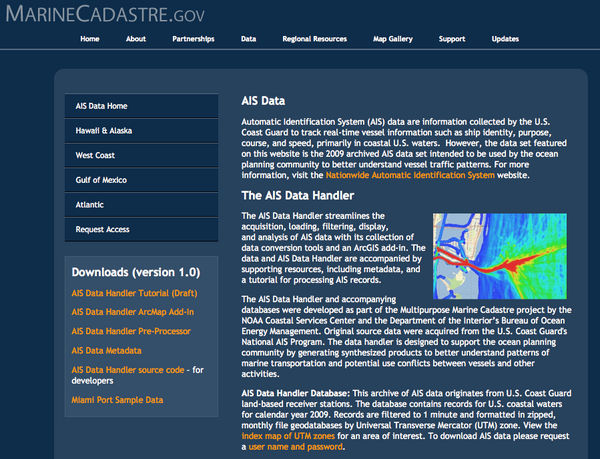
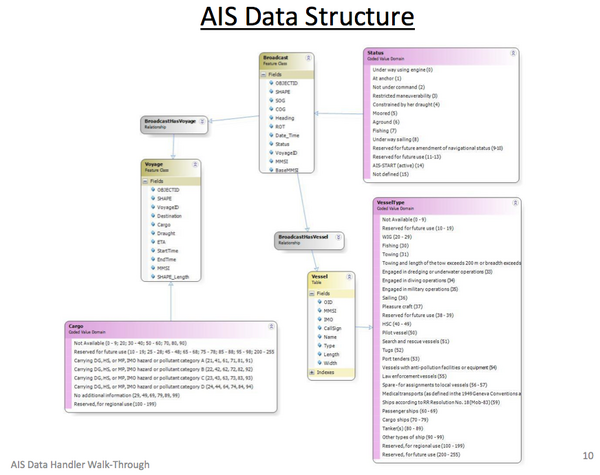
12.05.2011 07:44
QGIS instruction material
I'm at AGU this week. I was supposed
to have a poster this morning, but didn't manage to get it together
in time with everything that is going on. If you would like to talk
to me about my poster topic or anything else, please feel free to
email me and we can setup a meet time.
Tim Sutton posted A nice QGIS tutorial by Lex Berman, which links to Open Source Desktop GIS with Quantum at Harvard. A very polished looking web site.
He also has 14 QGIS videos on YouTube: HarvardCGA
Tim Sutton posted A nice QGIS tutorial by Lex Berman, which links to Open Source Desktop GIS with Quantum at Harvard. A very polished looking web site.
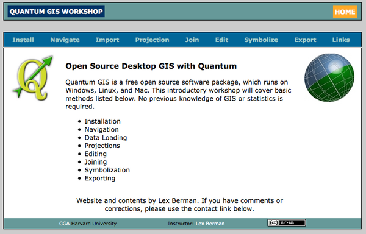
He also has 14 QGIS videos on YouTube: HarvardCGA
12.03.2011 16:36
Nick Parlante teaches python
I had Nick for CS106B (part 2 of
introduction to computer science using Pascal) and CS109
(introduction to many programming languages), but Python wasn't
arround at the time. Here is Nick teaching python at Google. How
cool is that! He was one of the best lectures in computer science
that I had as an undergrad back in the day.
Google Python Class in 19 videos for almost 18 hours. An he is only trying to cover python.
Google Python Class in 19 videos for almost 18 hours. An he is only trying to cover python.
12.02.2011 15:21
basemap for matplotlib back in fink!
basemap is back! at least for fink on
10.7... it is using libgeos3.3.1.
from mpl_toolkits.basemap import Basemap
import numpy as np
import matplotlib.pyplot as plt
width = 28000000; lon_0 = -105; lat_0 = 40
m = Basemap(width=width,height=width,projection='aeqd',
lat_0=lat_0,lon_0=lon_0)
# fill background.
m.drawmapboundary(fill_color='aqua')
# draw coasts and fill continents.
m.drawcoastlines(linewidth=0.5)
m.fillcontinents(color='coral',lake_color='aqua')
# 20 degree graticule.
m.drawparallels(np.arange(-80,81,20))
m.drawmeridians(np.arange(-180,180,20))
# draw a black dot at the center.
xpt, ypt = m(lon_0, lat_0)
m.plot([xpt],[ypt],'ko')
# draw the title.
plt.title('Azimuthal Equidistant Projection')
plt.savefig('aeqd.png')
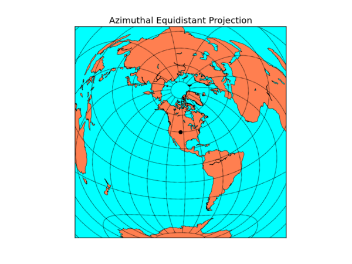
12.02.2011 09:32
Memory usage in python
Perhaps I need to think about how
this particular python script is written. I expected it to be slow,
but this slow?

PID COMMAND %CPU TIME #TH #WQ #POR #MREGS RPRVT RSHRD RSIZE VPRVT VSIZE PGRP PPID STATE UID FAULTS 4742 python2.7 23.6 02:52.91 2 0 24 36939 2744M- 520K 2555M- 14G 16G 4742 1001 sleeping 502 3710024+But I'm loading a ton of data all at one time and then writing it to a numpy array so that I can work with it much faster. 16G of virtual memory is a fair bit
12.02.2011 04:12
Last research tools class - RT 26 - Copyright and KML/SQLite export
Yesterday, I dashed out the audio
editing and screenshot to Keynote/PDF for Research Tools 26:
html, mp3, pdf and 26-python-binary-files-part-5.org. Any comments you might want to make can go here: Kurt's Backup blog: RT 26
I wish that BitBucket would let people to add comments to a particular version of the file, not just the commit. I love the way that DjangoBook.com allows comments. At least you can comment on a commit: comment on changeset db25c6a65fe2. But why not allow comments to be associated with a particular line?
And a little imagemagick + bash. It doesn't work as I want if the image is taller than wide, but typically my image captures are landscape style.
Erm by Dr. Drang.
He went from this:
Trackbacks:
Slashgeo 2011/12/05
html, mp3, pdf and 26-python-binary-files-part-5.org. Any comments you might want to make can go here: Kurt's Backup blog: RT 26
I wish that BitBucket would let people to add comments to a particular version of the file, not just the commit. I love the way that DjangoBook.com allows comments. At least you can comment on a commit: comment on changeset db25c6a65fe2. But why not allow comments to be associated with a particular line?
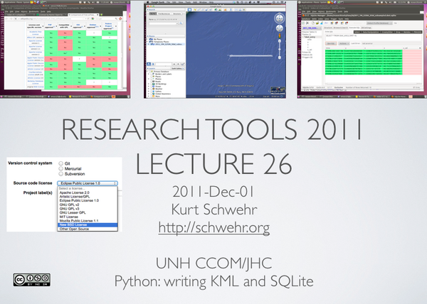
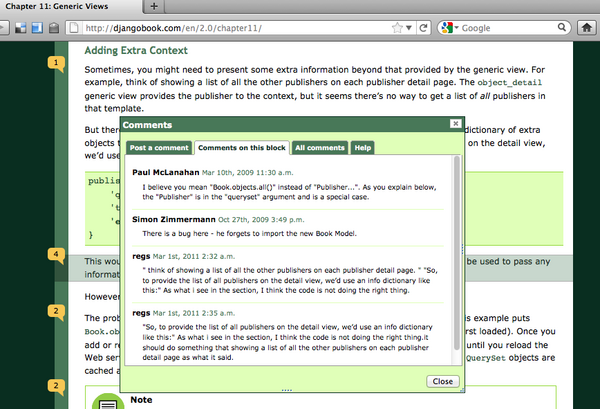
And a little imagemagick + bash. It doesn't work as I want if the image is taller than wide, but typically my image captures are landscape style.
convert -resize 600 {~/Desktop/,}rt-26.png
And an aside... I liked this post for the shell script rewrite with
explanation (I'm not going to start using TextExpander).Erm by Dr. Drang.
He went from this:
#!/bin/tcsh
echo -n `pbpaste` | perl -e 'while (<>) { s/-//g; print $_; }'
to this (I changed bash to sh and added --noprofile for speed).
#!/bin/sh --noprofile pbpaste | tr -dc '[:digit:]'I would also say to @macgenie's tweets: first and second... if you are going to use tcsh for scripts, you should at least switch to /bin/csh -f rather than tcsh for everything. Not a big deal in a one off, but if later you morph into a frequently called script, that will reduce overhead. But why would anyone want to use csh/tcsh? This coming from me who was a die hard {t,}csh user from 1990 to 1999 until I was forced to really start using bash during Mars Polar Lander.
Trackbacks:
Slashgeo 2011/12/05
12.01.2011 06:23
Last class for Research Tools 2011
I am sitting down to work on the
notes for my final lecture in Research Tools. I set my goals for
the class super high and knew they were definitely not attainable,
but I covered way less than I wanted and with far less depth than I
had hoped. I have big regrets about all the topics I have not
covered that I believe are important for students to understand. I
tried to create the class that I wish I had been able to take as an
undergrad. I created the initial version of the class with the
knowledge that I would be massively upgrading the class each year,
but this is literally the last class I'm teaching where the
CCOM/JHC Research Tools class is mine to craft. Whoever teaches the
class next if fully welcome to any of my material that suits them,
but they I expect them to teach the class in their own style and
that might be radically different than my vision. There is no
"correct way" to teach this class. If we never aim high and accept
that there will be mistakes along the way, we will never get very
far nor learn much.
Come January, I will be at Google with similar, but not identical, goals. So I am very frustrated that I won't be directly doing iteration 2 of research tools. That said, I will be working with the global marine science and education communities. As a part of that, I be a part of that community and work with everyone to improve the processes for generating and consuming ocean and lake data from our entire globe. I hope that I am able to push the Research Tools 2011 material to the next level as most of it is incomplete or at least has little or no polish. I will miss the interaction with students in the classroom who challenge me to explain topics more effectively. There is nothing like a puzzled look from the class to let you know that you did not define a word or concept before using it! And I get a motivation boost every time I see an "aha!" moment from a student.
At this point, I'm attempting to create the wrap up class and think about how effective this iteration of research tools was. I have to hand out the course reviews today. While there will be some constructive input in those responses, I really believe that the true test is how this class impacts the 16 students during their degree/certificate programs and in their careers when they leave the academic bubble. Will it matter that they took research tools from me when they are sitting in front of some tools like QGIS, MB-System, Caris, Hypack, ArgGIS or Fledermaus in the field 5 years from now?
What are some of the things that I wish I had covered, but never got to in the lectures? The biggest regret is not getting the students into Mercurial (hg) revision control right away. It takes time to develop a sense of what works and what is a bad idea with version control systems and the distributed variety (DVCS) is something that few in CCOM/JHC have had much time with. Team sizes at CCOM are typically 1 person with the occasional 2-3 person teams. I would really like the students of Research Tools to get comfortable with large team projects and with the idea that those teams can be distributed around the globe (both on land and at sea).
Some of the other topics that we did not get to that come to mind: Generic Mapping Tools (GMT), MB-System (free open source multibeam sonar processing), processing time series data with an example from tides (e.g. raw engineering units from a data logger to cleaned tide data ready and in the Caris input format; using Ben's tide tools!!!), getting data to {matlab, spreadsheets, fusion tables, databases, etc} from the raw sources via python, using LaTeX + BibTex + Beamer to create reports and presentations that rock and do not have to deal with figures that have to be live inside a document and how to write kick ass bug reports that get you help on tough problems we often face with complicated data collection and processing systems.
Many of the topics we did cover, we hardly brushed the surface on most. For example, I had plans of using a collection of 2000 ISO XML metadata files. By working through trying to understand the set of data files using only the metadata, I hoped to give people a personal sense of what should be in the metadata. Additionally, this would have sparked discussion on topics like:
Should the type of source(s) be in the metadata for the data be in a BAG representation of the sea floor? I desperately want to know if each BAG includes data from Topo Lidar, Bathy Lidar, Single beam, Multi beam, interferometric, visual imagery derived, wave height derived, seismic survey bottom picks and/or lead line methods. Brian Calder brought up that the goal for BAGs is that they are a best representation of the sea floor in an area and that I should be looking at the uncertainty to decide if I should use a data set or not. However, that information is not in the BAG ISO XML metadata (e.g. a min, max, mean, std dev of the bathy and uncertainty plus the fraction of cells that are empty or were purely interpolated between cells with data). That means I need to ask the HDF5 container for each data set about itself and even then, I will not be able to figure out the interpolation type (if any) that was applied to data. What if, for example, in 5 years, I decide that I need to exclude all BAGs that include bathy lidar from a processing chain when the BAG is older than 2012?
I owe a huge thank you to all of the students (and the two auditors) who went through the class. I hope that you all stay engaged with the research tools concept long after you've finished the class.
Come January, I will be at Google with similar, but not identical, goals. So I am very frustrated that I won't be directly doing iteration 2 of research tools. That said, I will be working with the global marine science and education communities. As a part of that, I be a part of that community and work with everyone to improve the processes for generating and consuming ocean and lake data from our entire globe. I hope that I am able to push the Research Tools 2011 material to the next level as most of it is incomplete or at least has little or no polish. I will miss the interaction with students in the classroom who challenge me to explain topics more effectively. There is nothing like a puzzled look from the class to let you know that you did not define a word or concept before using it! And I get a motivation boost every time I see an "aha!" moment from a student.
At this point, I'm attempting to create the wrap up class and think about how effective this iteration of research tools was. I have to hand out the course reviews today. While there will be some constructive input in those responses, I really believe that the true test is how this class impacts the 16 students during their degree/certificate programs and in their careers when they leave the academic bubble. Will it matter that they took research tools from me when they are sitting in front of some tools like QGIS, MB-System, Caris, Hypack, ArgGIS or Fledermaus in the field 5 years from now?
What are some of the things that I wish I had covered, but never got to in the lectures? The biggest regret is not getting the students into Mercurial (hg) revision control right away. It takes time to develop a sense of what works and what is a bad idea with version control systems and the distributed variety (DVCS) is something that few in CCOM/JHC have had much time with. Team sizes at CCOM are typically 1 person with the occasional 2-3 person teams. I would really like the students of Research Tools to get comfortable with large team projects and with the idea that those teams can be distributed around the globe (both on land and at sea).
Some of the other topics that we did not get to that come to mind: Generic Mapping Tools (GMT), MB-System (free open source multibeam sonar processing), processing time series data with an example from tides (e.g. raw engineering units from a data logger to cleaned tide data ready and in the Caris input format; using Ben's tide tools!!!), getting data to {matlab, spreadsheets, fusion tables, databases, etc} from the raw sources via python, using LaTeX + BibTex + Beamer to create reports and presentations that rock and do not have to deal with figures that have to be live inside a document and how to write kick ass bug reports that get you help on tough problems we often face with complicated data collection and processing systems.
Many of the topics we did cover, we hardly brushed the surface on most. For example, I had plans of using a collection of 2000 ISO XML metadata files. By working through trying to understand the set of data files using only the metadata, I hoped to give people a personal sense of what should be in the metadata. Additionally, this would have sparked discussion on topics like:
Should the type of source(s) be in the metadata for the data be in a BAG representation of the sea floor? I desperately want to know if each BAG includes data from Topo Lidar, Bathy Lidar, Single beam, Multi beam, interferometric, visual imagery derived, wave height derived, seismic survey bottom picks and/or lead line methods. Brian Calder brought up that the goal for BAGs is that they are a best representation of the sea floor in an area and that I should be looking at the uncertainty to decide if I should use a data set or not. However, that information is not in the BAG ISO XML metadata (e.g. a min, max, mean, std dev of the bathy and uncertainty plus the fraction of cells that are empty or were purely interpolated between cells with data). That means I need to ask the HDF5 container for each data set about itself and even then, I will not be able to figure out the interpolation type (if any) that was applied to data. What if, for example, in 5 years, I decide that I need to exclude all BAGs that include bathy lidar from a processing chain when the BAG is older than 2012?
I owe a huge thank you to all of the students (and the two auditors) who went through the class. I hope that you all stay engaged with the research tools concept long after you've finished the class.